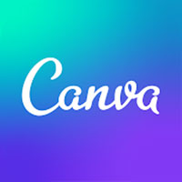
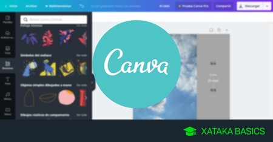

Canva
¿Qué es Canva?
Canva es una herramienta de diseño gráfico en línea que permite a cualquier persona crear diseños de manera sencilla,
sin necesidad de ser un experto en diseño. Fue lanzada en 2013 y desde entonces se ha convertido en una de las plataformas
más populares del mundo para crear contenido visual.

¿Para qué sirve Canva?
Canva sirve para crear una gran variedad de diseños gráficos. Algunos de los usos más comunes incluyen:
Diseñar presentaciones(tipo PowerPoint).
Crear publicaciones para redes sociales, como Instagram, Facebook o TikTok.
Hacer carteles, folletos, volantes o afiches.
Diseñar logotipos o marcas personales.
Realizar currículums o hojas de vida.
Crear invitaciones a eventos (cumpleaños, bodas, etc.).
Hacer videos cortos con texto e imágenes.
Diseñar portadas para libros, trabajos escolares o álbumes.
Todo esto se puede hacer desde plantillas prediseñadas que Canva ofrece de forma gratuita.

¿Cómo se puede utilizar Canva?
Registrarse en Canva:
Puedes crear una cuenta gratis con tu correo electrónico, cuenta de Google o Facebook.
Elegir qué quieres diseñar: Al entrar, verás opciones como “Presentación”, “Publicación para Instagram”, “Currículum”, etc.
También puedes buscar una plantilla específica usando el buscador.
Elegir una plantilla: Canva tiene miles de plantillas prediseñadas que puedes usar y modificar.
Puedes cambiar los colores, textos, imágenes, íconos, etc.
Personalizar el diseño: Puedes agregar tus propias fotos, logos o textos. También puedes usar imágenes gratuitas de Canva o elementos gráficos (como formas, líneas, íconos, stickers, etc.).
Guardar o descargar: Cuando terminas, puedes descargar el diseño en formato JPG, PNG o PDF. También puedes compartirlo directamente por correo,
redes sociales o mediante un enlace.

¿Quién creó Canva?
Canva fue creada en 2013 por Melanie Perkins, una joven emprendedora australiana, junto con Cliff Obrecht y Cameron Adams.
La idea surgió cuando Melanie, siendo profesora de diseño gráfico, notó que muchas personas tenían dificultades para usar programas
complicados como Photoshop. Quería crear una plataforma simple, accesible y online para que todos pudieran diseñar sin necesidad de experiencia técnica.
¿Cómo ha ayudado Canva a la comunidad digital?
Canva ha transformado la forma en que personas, empresas, estudiantes y organizaciones se comunican visualmente. Estas son algunas de sus contribuciones
más importantes:
Democratizó el diseño gráfico: Ahora cualquiera puede crear contenido visual sin ser diseñador.
Apoyo a la educación: Estudiantes y maestros lo usan para hacer presentaciones, infografías, y recursos visuales más atractivos.
Fomento del emprendimiento: Emprendedores pueden crear logos, catálogos, redes sociales y más, sin pagar a un diseñador.
Herramientas colaborativas: Personas pueden trabajar juntas en línea en el mismo diseño, ideal para clases, equipos o empresas.
Acceso gratuito: Muchas funciones están disponibles sin costo, lo que lo hace accesible para millones de personas en todo el mundo.
¿Cuál es la diferencia entre Canva, Mentimeter y Genially?
Canva es para diseñar gráficos estáticos o con poco movimiento (como posters o presentaciones).
Mentimeter se enfoca en la participación en tiempo real del público (interactivo en vivo).
Genially permite crear presentaciones o contenidos interactivos y animados, como juegos o mapas con enlaces.